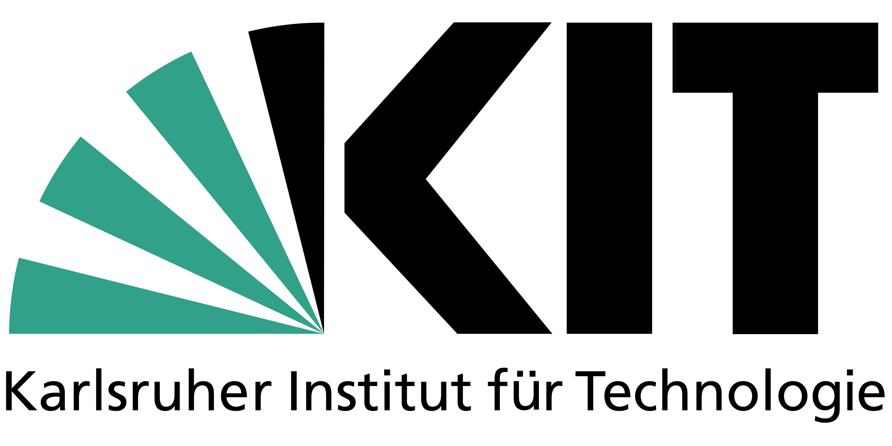
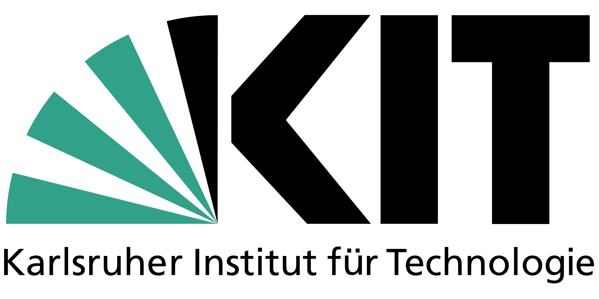

About Me
Hallo! I'm a second-year PhD candidate in the Atlas Lab at the Informatics Institute, University of Amsterdam, advised by Prof. Theo Gevers and Prof. Martin Oswald. My research focuses on 3D vision and scene understanding.
Earlier, I received my master's degree at ETH Zurich, where my thesis was supervised by Prof. dr. Luc Van Gool, and my bachelor's degree at Shanghai Jiao Tong University, both in Mechanical Engineering.
I am open for collaborations, feel free to drop me a message!
 

Research
| * | denotes equal contribution |
| ※ | all the visualizations are made by me |
Academic Services
Workshop co-organizer: Dense Neural SLAM Workshop at ECCV'24
Miscellaneous
I enjoy running and occasionally wander around the streets photographing, and am constantly in search of fantastic postcards✨.